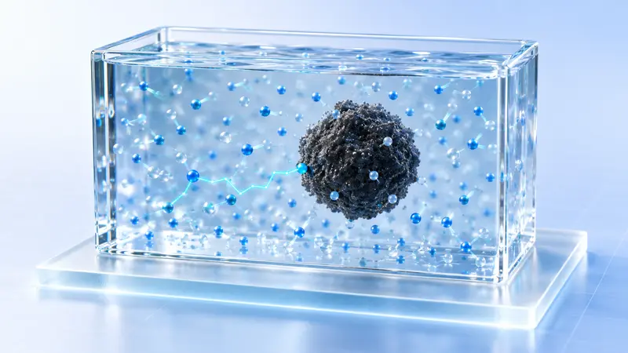
Chuyển động Brown và sự khuếch tán
Các phân tử vô hình, làm sao chúng ta có thể nói chúng đang chuyển động?
▶ Vào thí nghiệm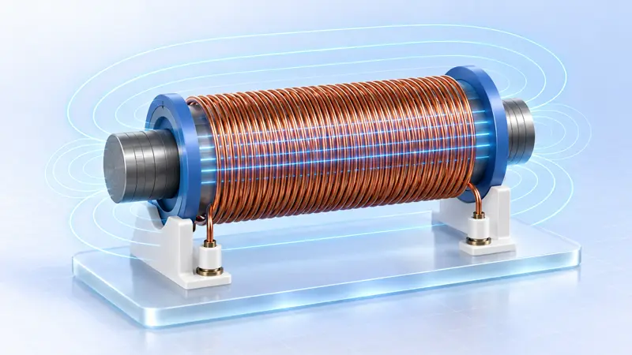
Hiện tượng tự cảm và dòng điện xoáy
Cuộn dây chỉ có thêm vài vòng dây đồng. Tại sao hai bóng đèn sáng khác nhau? Công tắc đã tắt, tại sao bóng đèn lại sáng được?
▶ Vào thí nghiệm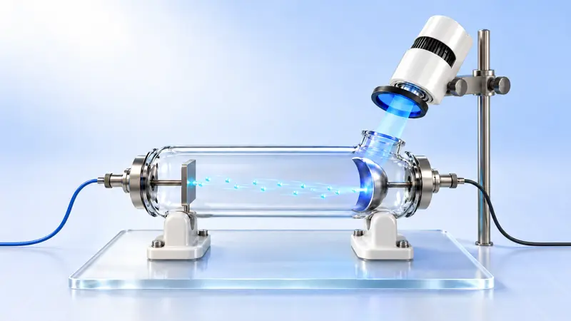
Hiệu ứng quang điện
Tại sao thậm chí một electron không thể thoát ra khỏi cùng một chùm ánh sáng nếu nó được chuyển sang kim loại khác? Điều gì xác định chính xác năng lượng của quang điện tử trong ánh sáng?
▶ Vào thí nghiệm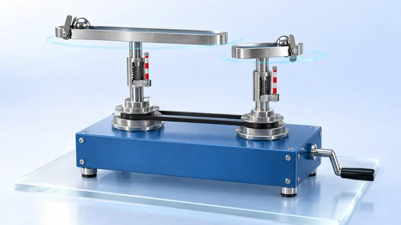
Khám phá mối quan hệ giữa lực hướng tâm, bán kính, vận tốc góc và khối lượng
Máy biểu diễn quay tay này chỉ cung cấp cho bạn hai cách chia trên thang đo - bạn có thể sử dụng nó để đo mối quan hệ định lượng giữa F và m, r và ω không?
▶ Vào thí nghiệm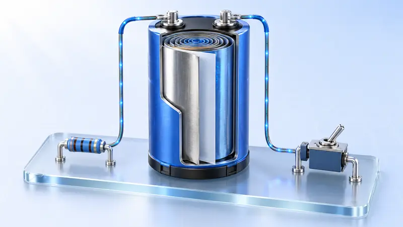
Quan sát tụ điện nạp và phóng điện
Chính xác những gì được lưu trữ trong một tụ điện? Bạn có thể đo được “khối lượng bụng” của nó chỉ bằng một con số không?
▶ Vào thí nghiệm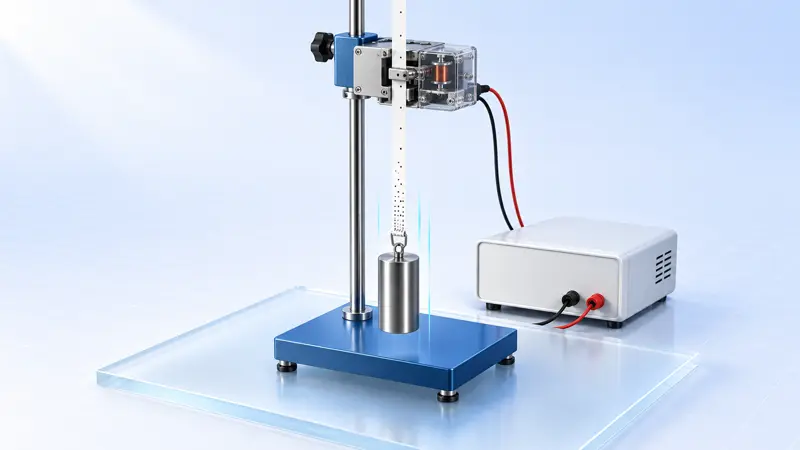
Thí nghiệm: Chứng minh định luật bảo toàn cơ năng
Khi một vật nặng rơi xuống, phải chăng thế năng hấp dẫn giảm đi chuyển thành động năng tăng lên? Một mảnh băng giấy có thể đo được điều này không?
▶ Vào thí nghiệm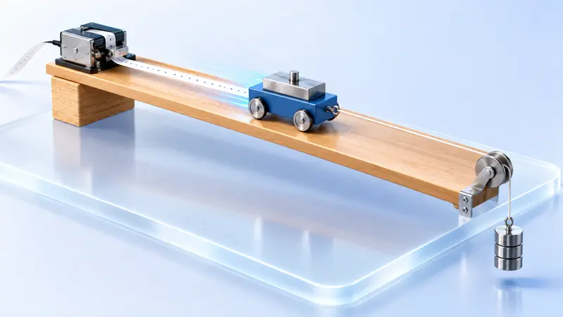
Thí nghiệm: Khám phá mối liên hệ giữa gia tốc, lực và khối lượng
Cả lực và gia tốc đều không được đo trực tiếp - bằng cách thêm một vài mã khe vào một mảnh băng giấy, liệu mối quan hệ giữa a, F và m có thể đo được không?
▶ Vào thí nghiệm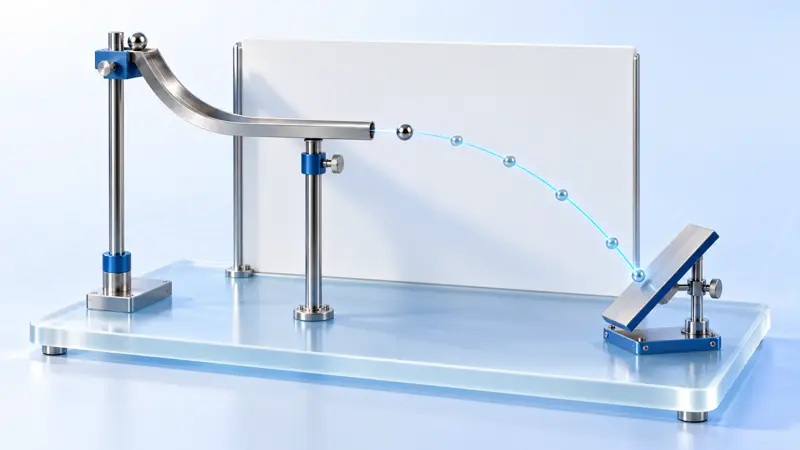
Thí nghiệm: Khám phá đặc điểm của chuyển động ném phẳng
Chỉ với một máng trượt và một vách ngăn, liệu cú ném phẳng có thể được chia thành hai chuyển động phụ và đo vận tốc ban đầu không?
▶ Vào thí nghiệm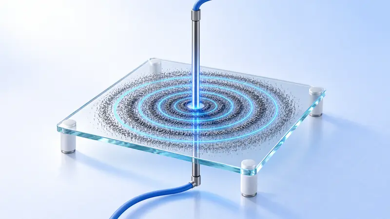
Từ trường của dòng điện
Từ trường là vô hình và vô hình. Làm thế nào để vẽ nó và làm thế nào để xác định hướng của nó?
▶ Vào thí nghiệm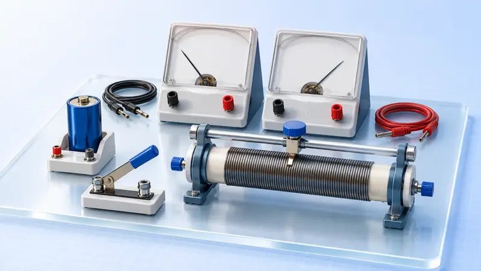
Đo suất điện động và điện trở trong của nguồn điện
Làm thế nào để "đo" suất điện động và điện trở trong của pin khô cũ bằng vôn kế, ampe kế và biến trở trượt? Nếu thay đổi phương thức kết nối thì kết quả đo có còn như cũ không?
▶ Vào thí nghiệm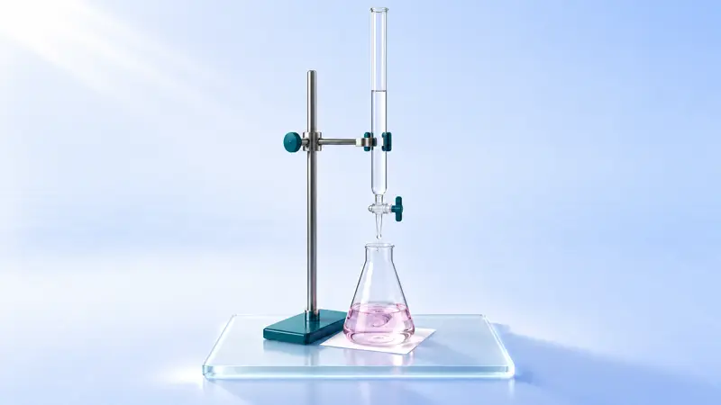
Chuẩn độ trung hòa axit mạnh và bazơ mạnh
Tôi đã thêm hơn 20 ml trước đó và hầu như không thấy thay đổi gì. Tại sao màu sắc lại thay đổi trong nửa giọt cuối cùng?
▶ Vào thí nghiệmCác yếu tố ảnh hưởng đến tốc độ phản ứng hóa học
Tại sao một số trong hai phản ứng giống nhau chỉ mất vài giây, trong khi những phản ứng khác lại phải đợi rất lâu? Điều gì quyết định tốc độ?
▶ Vào thí nghiệmCông nghiệp clo-kiềm
Làm thế nào chúng ta có thể đổi cùng một lượng điện lấy nhiều xút hơn, tiêu thụ ít điện năng hơn và không xảy ra tai nạn?
▶ Vào thí nghiệm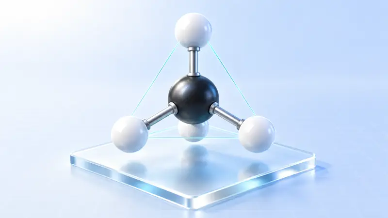
Dựng mô hình bóng – que của phân tử hữu cơ
Các phân tử phẳng khi vẽ trên giấy. Hình dạng ba chiều thực sự trông như thế nào? Bạn có thể biết được điều gì khi xây dựng mô hình quả bóng và cây gậy?
▶ Vào thí nghiệmKhám phá các yếu tố ảnh hưởng đến sự dịch chuyển cân bằng hóa học
Nếu một điều kiện bị thay đổi, làm sao người ta có thể nói cán cân sẽ dịch chuyển theo hướng nào?
▶ Vào thí nghiệm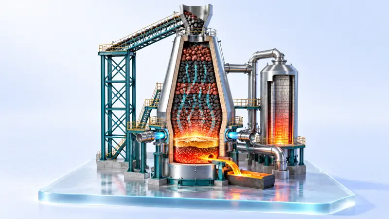
Luyện gang lò cao
Tại sao đống quặng đổ từ đỉnh lò lại biến thành dòng sắt nóng chảy chỉ sau vài giờ? Làm thế nào chúng ta có thể tiết kiệm được nhiều nhất có thể?
▶ Vào thí nghiệm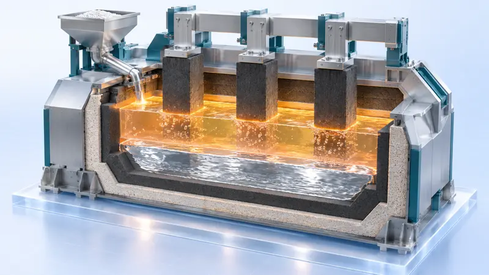
Luyện kim: điện phân muối nóng chảy và phản ứng nhiệt nhôm
Tại sao nhôm chỉ có thể “loại bỏ” bằng điện, còn sắt có thể “thay thế” bằng nhôm?
▶ Vào thí nghiệm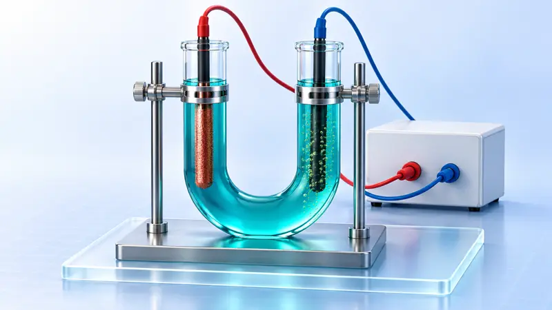
Nguyên lí điện phân: dung dịch CuCl₂ và nước muối bão hoà
Với cùng một nguồn điện một chiều, tại sao điện phân dung dịch clorua đồng lại thu được đồng và khí clo, còn điện phân nước muối bão hòa lại thu được khí hydro, khí clo và natri hydroxit?
▶ Vào thí nghiệm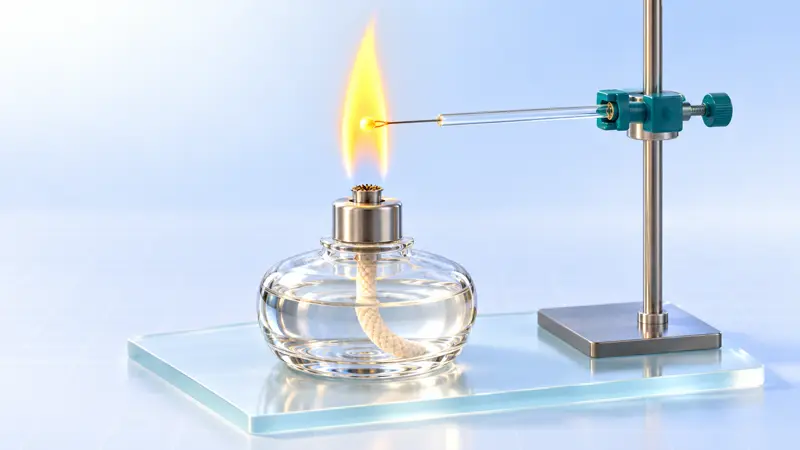
Phép thử màu ngọn lửa và quang phổ nguyên tử
Tại sao kim loại khi cháy có màu khác nhau? Tại sao màu này có thể được coi là "báo cáo thí nghiệm"?
▶ Vào thí nghiệm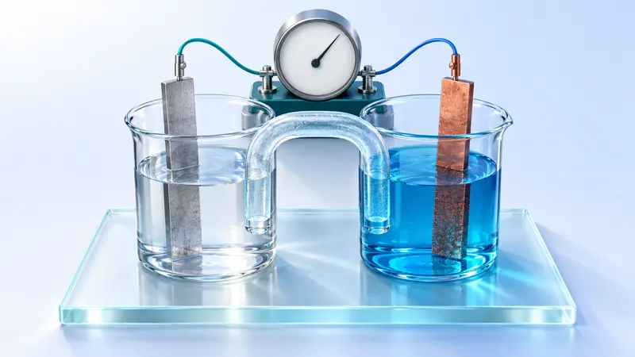
Pin điện hoá: từ một dung dịch đến hai dung dịch
Trong cùng một cốc axit sunfuric loãng đã có dòng điện rồi, tại sao phải thay hai cốc và thêm cầu muối?
▶ Vào thí nghiệm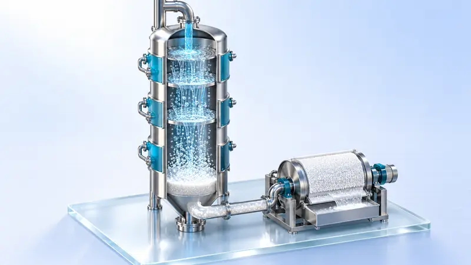
Quy trình sản xuất sô-đa của Hầu Đức Bàng
Làm thế nào để tạo ra tro soda từ muối và amoniac và dễ dàng lấy phân đạm?
▶ Vào thí nghiệm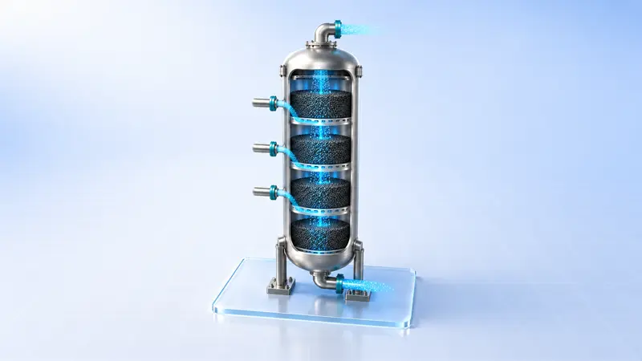
Sản xuất amoniac công nghiệp (quy trình Haber)
Làm thế nào để biến nitơ trong không khí thành amoniac một cách nhanh chóng, dồi dào và tiết kiệm chi phí?
▶ Vào thí nghiệm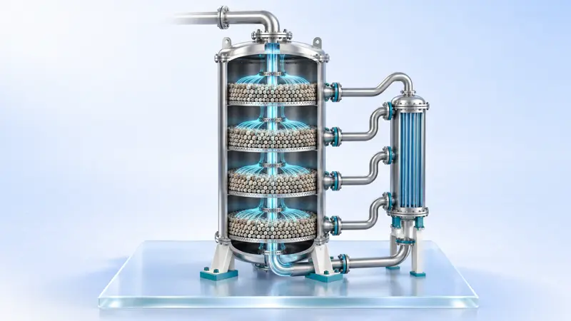
Sản xuất axit sulfuric bằng phương pháp tiếp xúc
Làm thế nào để biến lưu huỳnh trong quặng thành axit sunfuric một cách nhanh chóng, dồi dào, tiết kiệm và sạch?
▶ Vào thí nghiệm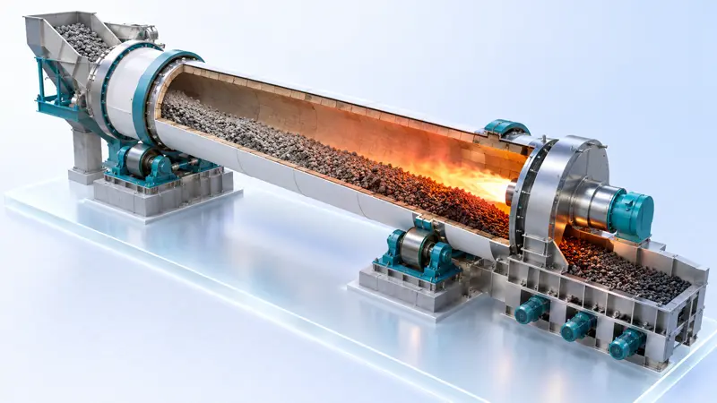
Sản xuất xi măng công nghiệp
Làm thế nào một khối đá và đất có thể được nghiền, đốt và nghiền lại để biến thành xi măng có thể chống đỡ một con đập?
▶ Vào thí nghiệmSắt và các hợp chất của nó: sự biến đổi trạng thái hóa trị của sắt
Tại sao cùng một nguyên tố sắt có hóa trị +2 và +3 trong ống nghiệm lúc này và +3 vào lúc khác? Làm sao chúng ta biết đó là cái nào?
▶ Vào thí nghiệm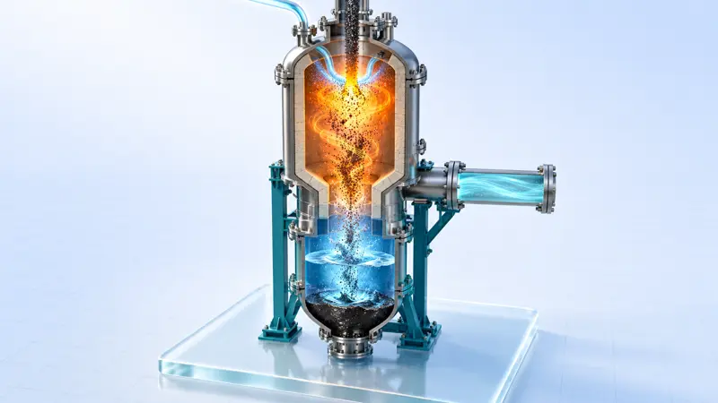
Sử dụng tổng hợp than đá: khí hoá than
Than có thể chỉ được đốt cháy? Làm thế nào để biến than thành khí đốt để sản xuất phân bón và metanol?
▶ Vào thí nghiệm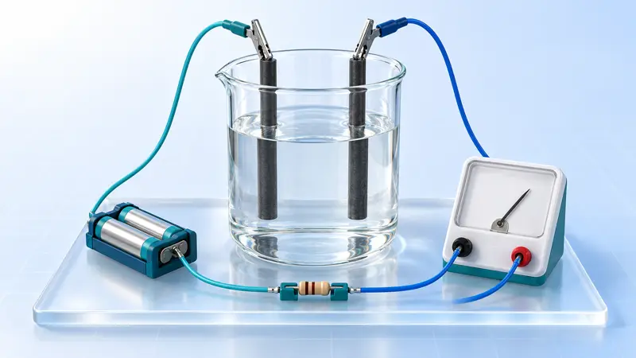
Sự điện li, độ dẫn điện của dung dịch và bản chất phản ứng ion
Tay khô và tay ướt đều là một bàn tay, tại sao tay ướt lại dễ bị điện giật?
▶ Vào thí nghiệm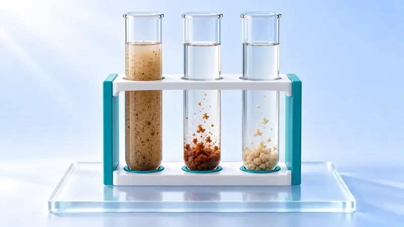
Thủy phân muối và ứng dụng
Các ion được tạo ra bởi quá trình ion hóa muối trông "không có tính axit cũng không có tính kiềm". Làm thế nào có thể tạo ra dung dịch có tính axit và kiềm?
▶ Vào thí nghiệm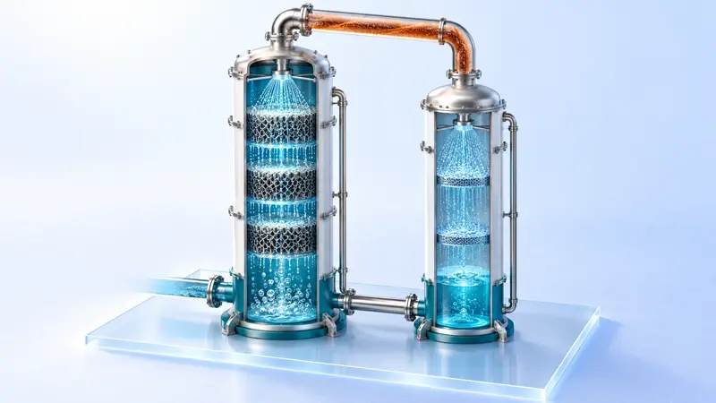
Tách brom từ nước biển: phương pháp thổi khí
Brom trong nước biển chỉ có 65 mg/L. Làm thế nào để biến nó thành một chai nước brom lỏng?
▶ Vào thí nghiệmTính chất của axit nitric đậm đặc, loãng và chuyển hóa oxit nitơ
Đó là cùng một loại đồng và axit nitric. Tại sao một chai lại thải ra khí màu nâu đỏ còn chai kia lại không có màu gì?
▶ Vào thí nghiệm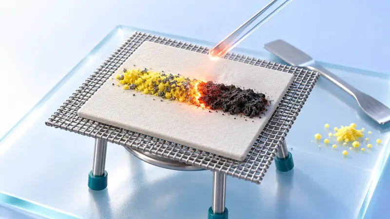
Tính chất của lưu huỳnh, điôxit lưu huỳnh, axit sunfuric đậm đặc và sự biến đổi của các chất chứa lưu huỳnh ở các trạng thái hóa trị khác nhau
Nó cũng là lưu huỳnh, tại sao có khi lại là chất rắn màu vàng, có khi lại làm màu đỏ tươi nhạt dần thành không màu, có khi lại hòa vào bột sắt?
▶ Vào thí nghiệmTính chất của natri (và cách dập cháy natri)
Tại sao một miếng kim loại nhỏ màu trắng bạc lại phải ngâm trong dầu hỏa, khi nó bốc cháy thì ngay cả nước cũng không thể đổ vào?
▶ Vào thí nghiệm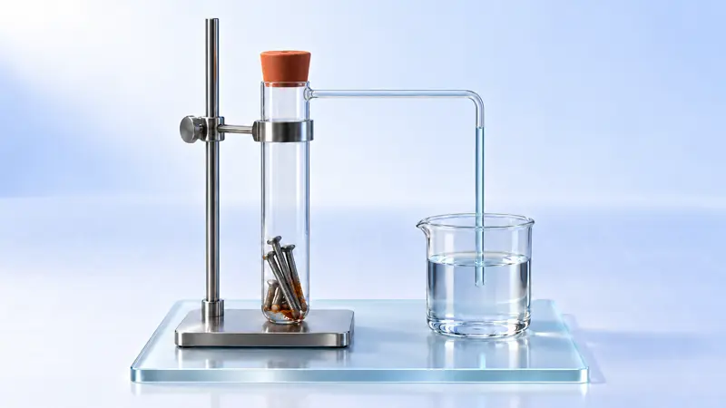
Ăn mòn do hấp thụ oxy và thiết kế miếng sưởi ấm
Nếu sắt rỉ sét chậm như vậy thì làm sao có thể tạo ra một miếng vá sưởi ấm ở nhiệt độ trên 45°C? Tại sao nên sử dụng nó để bảo vệ sắt khỏi rỉ sét?
▶ Vào thí nghiệm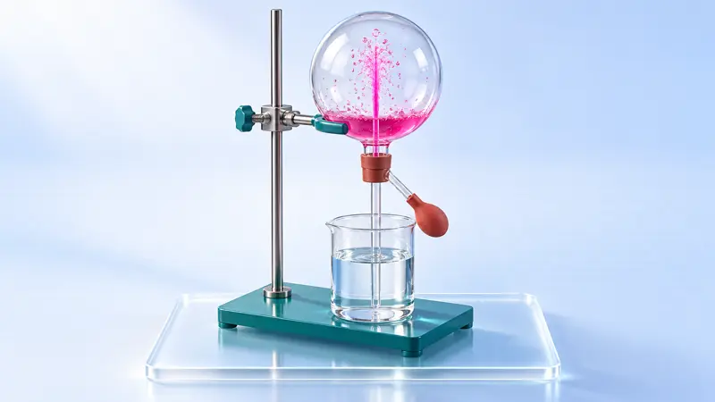
Điều chế và tính chất của amoniac (thí nghiệm đài phun nước)
Làm thế nào chai khí amoniac có thể “hút” nước trong cốc vào chai?
▶ Vào thí nghiệmĐiều chế và tính chất của khí clo
Tôi cần một chai clo khô, tinh khiết. Mỗi phần của thiết bị xử lý những gì? Điều gì sẽ xảy ra nếu thiếu một phần?
▶ Vào thí nghiệm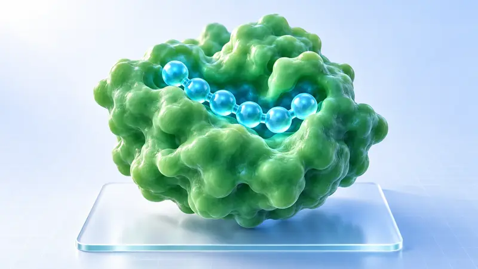
Các điều kiện ảnh hưởng đến hoạt động của enzyme
Tại sao enzyme đó khi cho vào nước sôi không thể sống lại nhưng khi cho vào nước đá vẫn có thể hoạt động?
▶ Vào thí nghiệm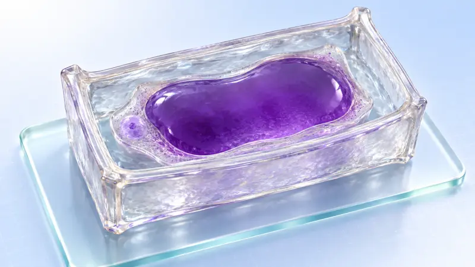
Hấp thụ nước và mất nước ở tế bào thực vật
Lá rau khi ngâm vào nước sạch sẽ cứng lại, khi rắc muối thì nước sẽ chảy ra - tế bào thực vật hấp thụ và mất nước như thế nào?
▶ Vào thí nghiệm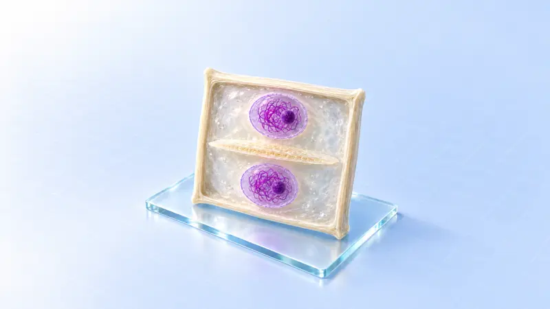
Quan sát nguyên phân ở tế bào mô phân sinh đầu rễ
Tế bào nào đang phân chia ở đầu rễ củ hành? Mất bao lâu để họ phân chia?
▶ Vào thí nghiệm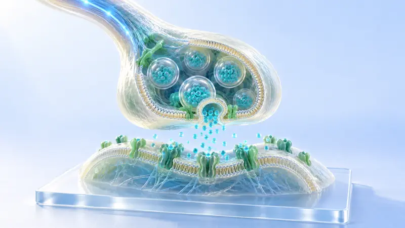
Tạo và dẫn truyền xung thần kinh
Xuất phát trong vòng 0,1 giây sau khi có tiếng súng nổ được coi là xuất phát sai (sách giáo khoa trang 27) - Sự hưng phấn “chạy” khắp cơ thể như thế nào?
▶ Vào thí nghiệm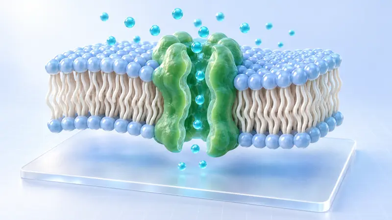
Vận chuyển các chất qua màng
Tại sao oxy có thể tự mình đi qua cùng một màng tế bào, glucose cần sự trợ giúp của một số protein và K⁺ cũng có thể di chuyển ngược lại nồng độ?
▶ Vào thí nghiệm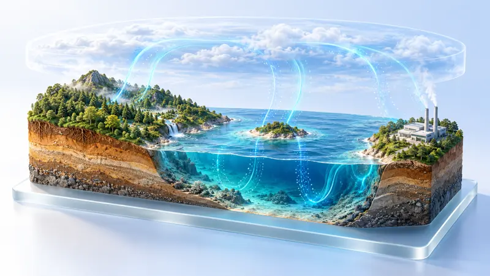
Biến đổi khí hậu toàn cầu và an ninh quốc gia
Vì sao Maldives tổ chức họp nội các ở độ sâu 6 mét dưới biển?
▶ Vào thí nghiệm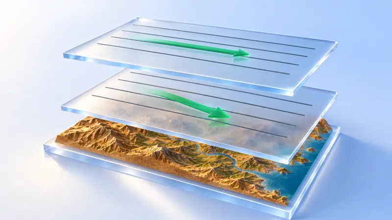
Chuyển động ngang của khí quyển - gió
Tại sao gió trên bản đồ thời tiết không thổi thẳng từ nơi áp cao về nơi áp thấp?
▶ Vào thí nghiệm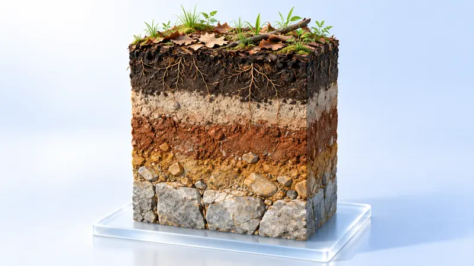
Các nhân tố hình thành đất và quan sát phẫu diện đất
Đất ở vùng Đông Bắc sẫm màu và màu mỡ nhưng tại sao đất ở phía Nam lại tương đối cằn cỗi?
▶ Vào thí nghiệm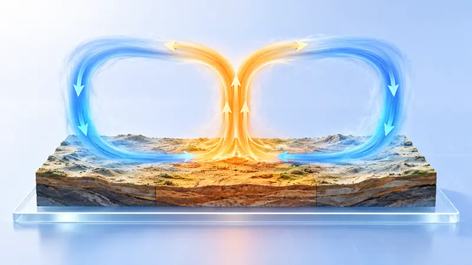
Hoàn lưu nhiệt của khí quyển
Tại sao hướng gió qua eo biển Đài Loan đảo ngược trong một ngày?
▶ Vào thí nghiệm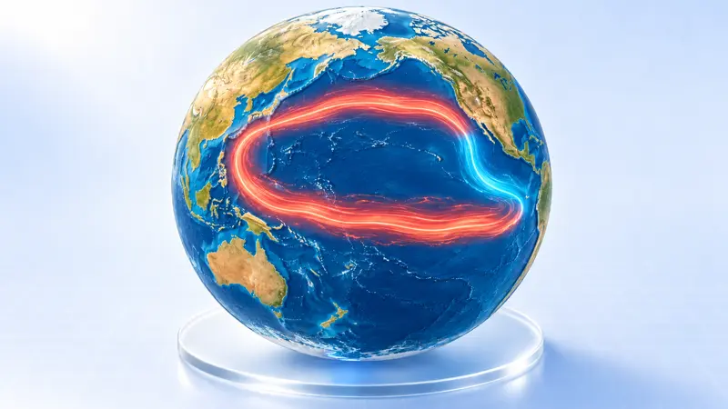
Mô hình phân bố và ảnh hưởng của các dòng hải lưu trên thế giới
Tại sao hàng chục ngàn con vịt đồ chơi rải rác trên biển và trôi dạt đến các bờ biển trên khắp thế giới?
▶ Vào thí nghiệm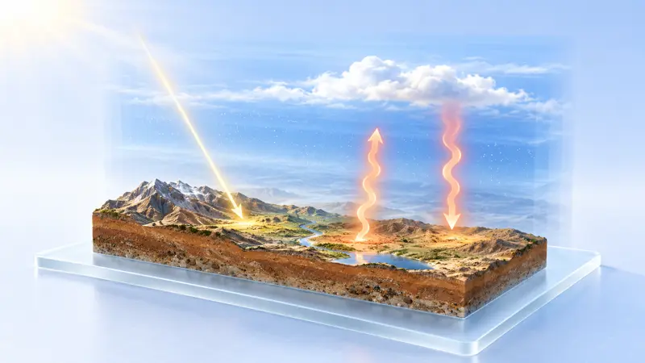
Quá trình khí quyển nhận nhiệt
Tại sao mặt đất nóng lên vào ban ngày và sau đó nguội đi nhanh chóng vào ban đêm khi mặt trời đã chiếu sáng cả ngày? Khí quyển giữ lại bao nhiêu nhiệt cho mặt đất?
▶ Vào thí nghiệm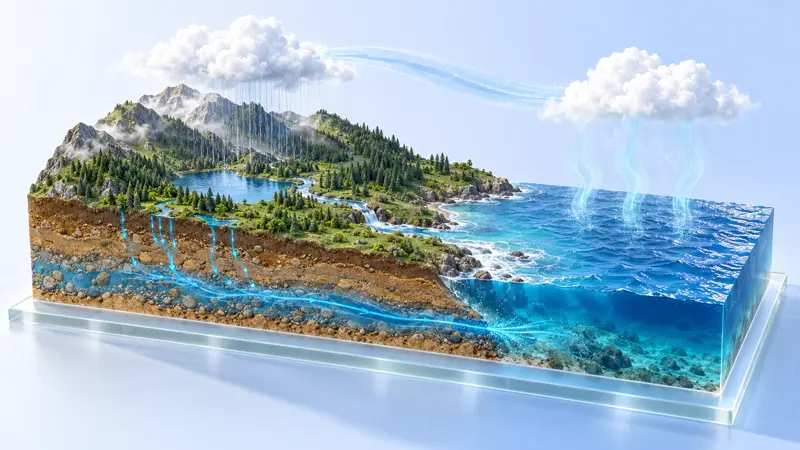
Quá trình và ý nghĩa địa lý của vòng tuần hoàn nước
Sông tiếp tục đổ ra biển, tại sao nước biển không tăng?
▶ Vào thí nghiệm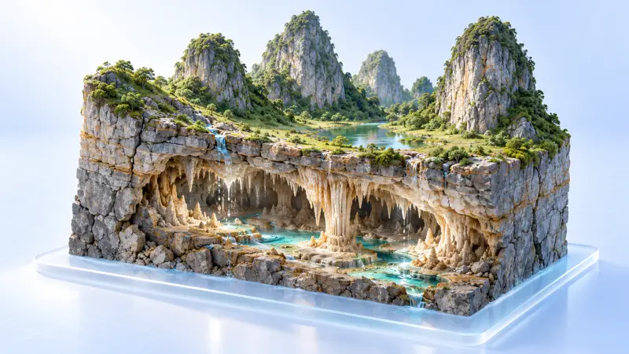
Sự hình thành và nhận dạng địa hình karst
Xu Xiake viết: “Các đỉnh dốc đứng cách xa nhau, các cành cạnh tranh nhau”. - Làm thế nào mà những đỉnh núi trông giống như mọc lên từ mặt đất này lại đến từ một khối đá duy nhất?
▶ Vào thí nghiệm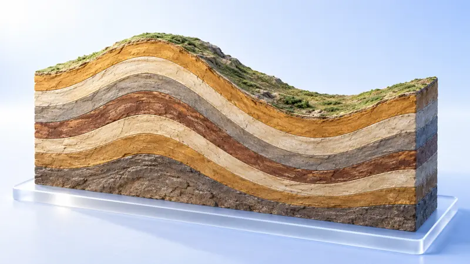
Sự hình thành địa hình kiến tạo
Tại sao lá hóa thạch của cây lá rộng được tìm thấy trên cao nguyên Thanh Hải-Tây Tạng? Lực nào đã nâng bề mặt trái đất lên và cắt nó ra?
▶ Vào thí nghiệm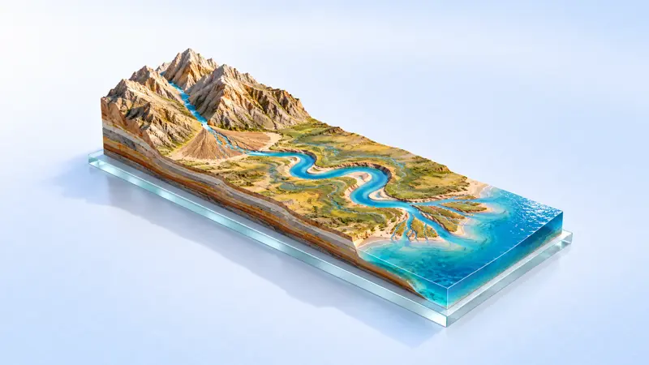
Sự phát triển địa hình sông
Tại sao đường bờ biển đoạn Trấn Giang của sông Dương Tử tiếp tục dịch chuyển về phía bắc?
▶ Vào thí nghiệm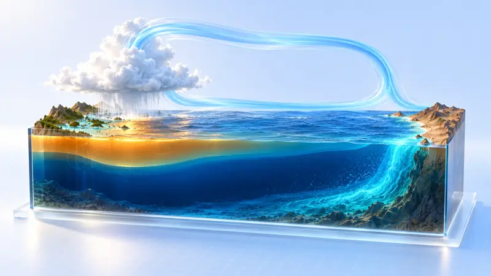
Tương tác biển-không khí và El Niño và La Niña
Bờ biển Peru bị hạn hán quanh năm. Tại sao cuối năm 2016 lại mưa lớn khi nước biển ấm lên khiến gần trăm người thiệt mạng?
▶ Vào thí nghiệmÝ nghĩa địa lý của chuyển động trái đất
Cùng lúc đó, tại sao ở Bắc Kinh lại là buổi trưa, ở New York là nửa đêm, và ngày mùa hè lại dài hơn mùa đông?
▶ Vào thí nghiệmĐai áp, đai gió và tuần hoàn ba vòng
Tại sao hạm đội Magellan đi ngược gió ở một số đoạn và thuận gió ở những đoạn khác, nhưng không thể tiến về phía trước khi đạt đến khoảng 30°N?
▶ Vào thí nghiệmĐiểm chiếu thẳng của Mặt Trời: bốn mùa và năm đới
Vì sao độ cao và hướng nắng buổi trưa tại địa điểm trường thay đổi thường xuyên trong năm?
▶ Vào thí nghiệmKhông tìm thấy bài nào khớp. Thử từ khoá khác nhé.